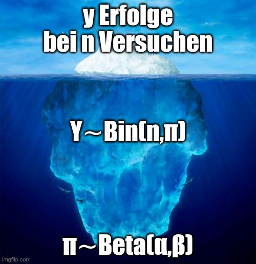

{kind=link}

Projekt: Data Literacy
WiSe 25/26
Prof. Dr. Matthias Gehrke
FOM Frankfurt
Inhaltsverzeichnis
Über mich 🤓
- Prof. Dr. phil. nat. Matthias Gehrke (m), seit 2006 freiberuflich und ab 2008 hauptberuflich an der FOM Frankfurt
- 19932004 Gesellschafter-Gesch칛ftsführer der CORTEX Biophysik GmbH, Leipzig
- Schwerpunkte in der Lehre: Statistik und Rechnungswesen
- Forschungsschwerpunkte: Finanzmarktökonometrie, Hochschuldidaktik für Statistik
- ✉️ matthias.gehrke@fom.de
Herzlich Willkommen 😍
Meine Wünsche für diese Veranstaltung 🙏
- 📹 Schalten Sie Ihre Kamera ein.
- 💻 Arbeiten Sie aktiv mit.
- 🙋 Stellen Sie Fragen.
- 💪 https://tweedback.de/2zdb/
Wie ist die Stimmung heute?
Skript Teil I/II:
Intro, Organisatorisches, Theorie
1 Grundlagen Unsicherheit
Einführung
- Ich habe hier eine Münze, die ich gleich werfen werde: Wie hoch ist die Wahrscheinlichkeit für Kopf?
- Nachdem ich sie geworfen habe: Wie hoch ist die Wahrscheinlichkeit für Kopf jetzt?
- Ich habe drei verschiedene Münzen, eine normale mit zwei Seiten, eine Kopf, die andere Zahl. Ich habe aber auch eine mit zwei Seiten Kopf und eine mit zwei Seiten Zahl. 😱
Erste Lernergebnisse 👩‍🏫
- Es gibt zwei verschiedene Quellen der Unsicherheit: Zufall und Unwissenheit.
- Bevor ich die Münze warf Zufall, nachdem ich die Münze warf Ihre Unwissenheit. 😜
- Ihre erste Antwort (50-50) basierte auf Annahmen, z. B., dass ich eine faire Münze werfe. Diese können zutreffen, müssen es aber nicht. 🙏
- Wahrscheinlichkeit als Ma für Unsicherheit ist subjektiv. 游땯
Quelle: Spiegelhalter D. (2024). Why probability probably doesn뗪 exist (but it is useful to act like it does). Nature, 636(8043), 560563. https://doi.org/10.1038/d41586-024-04096-5
Zwei Wahrscheinlichkeiten
- Aleatorische Wahrscheinlichkeit: Gibt die langfristige relative H칛ufigkeit eines wiederholbaren Ereignisses an. Unter der Annahme, die Wahrscheinlichkeit für Kopf bei einem Münzwurf ist \pi, wie oft beobachte ich dann Kopf bei n Würfen?
- Epistemische Wahrscheinlichkeit: Gibt die relative Plausibilit칛t eines Ereignisses an. Welchen Wert hat die Wahrscheinlichkeit für Kopf, \pi?
Selbst \pi=0.5 bei einer fairen Münze scheint nicht zu stimmen zumindest wenn man wei, welche Seite beim Werfen oben war. Siehe Barto코, F., Sarafoglou, A., Godmann, H. R., Sahrani, A., Leunk, D. K., Gui, P. Y., & Wagenmakers, E. J. (2023). Fair coins tend to land on the same side they started: Evidence from 350,757 flips. arXiv:2310.04153. https://doi.org/10.48550/arXiv.2310.04153
Hinweis Wahrscheinlichkeiten
Für Wahrscheinlichkeiten gilt:
- Absolute Sicherheit, dass eine Aussage H stimmt, bedeutet eine Wahrscheinlichkeit von 1: Pr(H)=1.
- Absolute Sicherheit, dass eine Aussage H nicht stimmt, bedeutet eine Wahrscheinlichkeit von 0: Pr(H)=0.
- Es gilt 0 \leq Pr(H) \leq 1 und Pr(H) + Pr(\text{nicht }H)=1.
Pr(\cdot) vom englischen Probability.
Eine Übersicht
2 Organisatorisches
Workload
- (Virtuelle) Pr칛senzstunden: 8 UE
- Virtuelle Unterrichtseinheiten: 28 UE
- Strukturiertes Eigenstudium: 58 ZStd
- Student Consulting/Praxistransfer: 40 ZStd
- Workload gesamt: 125 ZStd
- ECTS-Credit Punkte: 5
Hinweis
Die virtuellen Unterrichtseinheiten (Academic Mentoring) erfolgen über Sprechstunden (Zoom, Email, Telefon) sowie Materialien in Moodle.
Academic Mentoring
Um Ihr Lernen zu unterstützen sind im Moodle-Kurs hinterlegt:
- dieser Foliensatz
- erg칛nzende Videos
- erg칛nzende Quizze
- Literatur
- weitere Unterlagen und Übersichten
Tipp
Nutzen Sie die eingestellten Unterlagen. Diese sind anders als die Ausgaben von Sprachmodellen genau auf diesen Kurs abgestimmt.
Modulziel
In diesem Modul werden die im Modul Quantitative Datenanalyse erlernten Methoden in einer eigenst칛ndigen quantitativen Datenanalyse umgesetzt. Die Studierenden können nach erfolgreichem Abschluss des Moduls eine quantitative Datenanalyse entlang des PPDAC durchführen, also
- ein zu analysierendes Problem definieren (Forschungsfrage),
- die Planung der Analyse erstellen,
- die benötigten Daten ggf. erheben (oder Sekund칛rdaten verwenden), managen und bereinigen,
- die nötigen Analysen softwaregestützt durchführen und
- die entsprechenden Schlussfolgerungen (Conclusion) ziehen.
Prüfung und Benotung
- gro른 Seminararbeit
- ca. 8 Wochen Bearbeitungszeit
- 100% der Modulnote
- Theorie-Praxis-Transfer: Das gew칛hlte Thema wird auf die Praxis bezogen und in einem eigenen Gliederungspunkt dargestellt (ca. 25% des Seminararbeitsumfangs).
Die Seminararbeit umfasst im vorliegenden Modul die Durchführung und entsprechende Dokumentation einer Datenanalyse. Die Datenanalyse muss transparent und reproduzierbar sein. Dazu sind die Daten und die Analysen (R Skripte, Quarto-Dokument) entsprechend mit einzureichen.
Ihre Aufgabe 🎓
Führen Sie eine bayesianische Datenanalyse zu einer Fragestellung durch, die mit Hilfe eines Anteilswert beantwortet wird.
Hinweis
Anteilswerte sind z. B. relative H칛ufigkeiten einer Auspr칛gung einer kategorialen Variable.
Fragestellungen
Zwei Alternativen:
Fragestellung aus Ihrer beruflichen Praxis
Nachhaltiges Handeln
Hinweis
Sie müssen die Wahl Ihrer individuellen Fragestellung in der Arbeit begründen.
In diesem Abschnitt kann Literatur helfen.
Fragestellung aus beruflicher Praxis
Die Datenerhebung zur Beantwortung Ihrer Fragestellung kann mittels Beobachtung, (Kurz-)Umfrage oder durch unternehmensinterne Daten erfolgen.
Wichtig
Stellen Sie auf jeden Fall vorab sicher, dass Sie die Daten nutzen oder erheben dürfen.
Fragestellung nachhaltiges Handeln
- Überlegen Sie sich eine Fragestellung zum Thema nachhaltiges Handeln.
- Die Datenerhebung zur Beantwortung Ihrer Fragestellung kann mittels Beobachtung oder (Kurz-)Umfrage erfolgen.
Suchen Sie ein Thema, was SIE interessiert und niemandem schadet!
Wissenschaft darf auch Spa machen - praktisch ist sie sowieso. 游땔
Ihre Fristen 🧑‍🎓
- 01.11.2025: Anmeldefenster Seminararbeit öffnet (s. Studienbuch).
- 15.12.2025: Anmeldefrist Seminararbeit l칛uft ab.
- 15.02.2026: Abgabefrist Seminararbeit.
Warnung
Die Fristen für die Anmeldung sowie die Abgabe können nicht verl칛ngert werden.
Formalien
- Gruppengr칬른n bis zu drei Personen sind möglich. Die individuellen Beitr칛ge müssen kenntlich gemacht werden. Die Aufgabenstellung und Gliederung sind für alle Gruppengr칬른n gleich. Mit steigender Gruppengr칬른 steigt der Umfang der Seminararbeit und die methodischen Mindestanforderungen in der Analyse.
- Es gibt eine Vorlagedatei für die Seminararbeit (
Vorlage_Seminararbeit.qmd). Diese ist auch in dem Posit Cloud Projekt verfügbar und sollte verwendet werden. - Die Gliederung orientiert sich am PPDAC Prozess.
- Titel der Arbeit: Bayesianische Datenanalyse
- Abzugeben ist das PDF nach
Render PDF, sowei die Quarto-Datei(qmd)und ggf. die Daten als Zip-Anhang.
Warnung
Das Nichteinhalten der formalen Rahmenbedingungen kann zur Folge haben, dass die Seminararbeit als nicht ausreichend bewertet wird.
Bewertungskriterien 👩‍🏫
- inhaltliche Korrektheit in Motivation, Argumentation und Interpretation
- methodische Angemessenheit und Umsetzung, siehe auch Kapitel 5
- fachwissenschaftliche Ausdrucksweise
- Anspruch, Eigenst칛ndigkeit und Originalit칛t
Hinweis
Die Gesamtnote muss nicht aus dem arithmetischen Mittel der Einzelnoten gebildet werden. Auch Defizite in einzelnen Kriterien können zu einer nicht mehr ausreichenden Gesamtbewertung führen.
Prim칛rquelle

- Kapitel 1-3, 8.1, 8.3
- Verfügbar unter: https://www.bayesrulesbook.com/
Literatur
- Kapitel 16
- Kapitel 1, 2, 5, 6, 7, 8, 10, 11
- Verfügbar unter: https://link.springer.com/book/10.1007/978-3-662-56782-1
Anforderungen im Kontext wissenschaftlicher Arbeiten I / II 🎓
🎯 Zielsetzung
- eigenst칛ndige Auseinandersetzung mit einer klar definierten Fragestellung
- nachvollziehbare Argumentation und fundierte Schlussfolgerungen
✍️ Wissenschaftlicher Schreibstil
- sachlich, pr칛zise, klar, neutral
- keine Umgangssprache, Übertreibungen oder persönliche Wertungen
- Formulierungen in der ersten Person Singular oder Plural (Ich-, Wir-Form) sollten in (deutschsprachigen) wissenschaftlichen Texten möglichst vermieden werden
- Argumentationen durch Quellen belegen
Anforderungen im Kontext wissenschaftlicher Arbeiten II / II 🎓
🗂 Formale Kriterien
- einheitliches Layout (Schrift, Seitenr칛nder etc.)
- korrekte Rechtschreibung und Grammatik
- eindeutig definierte Fachgegriffe (z. B. Signifikanzniveau, Hypothesen) korrekt verwenden
- Übereinstimmung von Literaturverzeichnis und zitierter Literatur
游 Literaturverzeichnis
- vollst칛ndige und konsistente Angaben
- alphabetisch sortiert
⚠️ Plagiatsvermeidung
- Jede Quelle muss kenntlich gemacht werden!
- Auch bei Paraphrasen: Quellenangabe nicht vergessen!
Sprachmodelle
- Sie dürfen Sprachmodelle für die Hausarbeit nutzen.
- Sie müssen die Nutzung in der Arbeit kennzeichnen.
- Sie sollten die Ausgaben kritisch hinterfragen. 👩‍🏫
Tipp
Kurs MODERN-DAY ORACLES or BULLSHIT MACHINES? How to thrive in a ChatGPT world von Carl T. Bergstrom von Jevin D. West (2025): https://thebullshitmachines.com/
3 Binomialverteilung in
Münzwurf 💪
Beim n=8-maligen Werfen einer fairen Münze mit \pi=0.5: Welche Anzahl Kopf y ist wahrscheinlicher?
- A: 4\times Kopf.
- B: 8\times Kopf.
- C: 4\times Kopf und 8\times Kopf sind gleich wahrscheinlich.
- D: Keine Aussage möglich.
Wahrscheinlichkeit 💪
Um was für eine Wahrscheinlichkeit handelt es sich bei der Anzahl Kopf y=4 bzw. y=8 beim n=8-maligen Werfen einer fairen Münze mit \pi=0.5?
- A: Aleatorische Wahrscheinlichkeit.
- B: Epistemische Wahrscheinlichkeit.
- C: Sowohl aleatorische als auch epistemische Wahrscheinlichkeit.
- D: Weder aleatorische noch epistemische Wahrscheinlichkeit.
Münzwurf
- Nehmen Sie eine faire Münze und werfen Sie diese acht Mal. Notieren Sie die Anzahl Kopf (Wappen).
- Tragen Sie Ihr Ergebnis bitte hier ein: https://survey.fom.de/muenzwurf-vorlesung/.
- Geben Sie dabei den Namen Ihrer Lehrperson und das heutige Datum an, damit wir unser Kursergebnis verwenden können. Achten Sie auf die richtige Schreibweise des Namens.
Hinweis Münzwurf 👩‍🏫
- Der Münzwurf ist hier ein Stellvertreter für viele relevante Fragestellungen in Wissenschaft und Praxis, z. B.:
- Mit welcher Wahrscheinlichkeit wirkt ein Medikament?
- Mit welcher Wahrscheinlichkeit wird ein Produkt gekauft?
- Mit welcher Wahrscheinlichkeit ist eine Antwort auf eine Klausurfrage richtig?
- Grundlage sind unabh칛ngige Versuche mit den Auspr칛gungen Erfolg bzw. Misserfolg.
- Ihre Aufgabenstellung ist es, eine vergleichbare Fragestellung mit einer dichotomen bzw. bin칛ren Variable zu beantworten. Auch wenn der Münzwurf als solcher Sie vielleicht nicht so sehr interessiert, so lohnt es sich doch, sich ihn einmal anzuschauen. 🎓
& Friends
- R ist eine freie Programmiersprache für statistische Datenanalysen.
- RStudio ist eine Entwickungsumgebung für R.
mosaicist ein Zusatzpaket für R. Dies muss einmalig vorab überinstall.packages("mosaic")installiert werden.- Quarto ist ein Publikationssystem, dass Text, Code und Ausgaben reproduzierbar kombiniert.
Tipp
Sie können die nötigen Programme lokal installieren oder den Cloud-Dienst https://posit.cloud/ nutzen.
Hinweise Programmierung in R
- unterscheidet zwischen Gro- und Kleinbuchstaben.
- verwendet den Punkt
.als Dezimaltrennzeichen. - Fehlende Werte werden in durch
NAkodiert. - Eine Ergebniszuweisung erfolgt über
<-. - Eine Übergabe / Weitergabe erfolgt über
|>. #leitet einen Kommentar ein.
Ergebnis Münzwurf
Dem R-Objekt muenzergebnis wird unser Ergebnis als Vektor (c()) zugewiesen (<-):
Tabelle und S칛ulendiagramm
tally() und gf_bar() , beide aus dem Paket mosaic, erstellen eine Tabelle bzw. ein S칛ulendiagramm des Ergebnisses:
Münzwurf Forts. 💪
Beim n=8-maligen Werfen einer fairen Münze mit \pi=0.5. Welche Anzahl Kopf y ist wahrscheinlicher?
- A: 4\times Kopf.
- B: 8\times Kopf.
- C: 4\times Kopf und 8\times Kopf sind gleich wahrscheinlich.
- D: Keine Aussage möglich.
Zweite Lernergebnisse 👩‍🏫
- Auch bei festem Wert \pi=0.5 kommen aufgrund aleatorischer Unsicherheit unterschiedliche Ergebnisse für y und p=\frac{y}{n} heraus.
- Der Wert der Statistik p liegt h칛ufig in der N칛he des Wertes des Parameters \pi. Kleinere Abweichungen sind dabei relativ h칛ufig, gr칬른re relativ selten.
- Wir können (und sollten!) Daten nutzen, um unsere Meinungen ggf. anzupassen. 🙏
S칛ulendiagramm verbessern
R (über ggformula bzw. ggplot2) bietet sehr viele Möglichkeiten z. B. Beschriftungen etc. anzupassen:
Vekoren in R
Funktionen (und Operationen) werden auf den ganzen Vekor angewendet:
R als Taschenrechner
Mit R kann wie mit einem Taschenrechner gerechnet werden:
Die Werte und Ergebnisse können auch zugewiesen werden, um damit weiter zu rechnen:
Zahlenfolge 💪
seq(from, to, by) erzeugt einen Vektor einer Zahenfolge von from bis to mit einer Schrittweite von by.
Erzeugen Sie eine Zahlenfolge von 0 bis 1 mit einer Schrittweite von 0.01. Benennen Sie das Ergebnis vektor_pi.
Gesamtergebnis
Für unsere Gruppe ergibt sich folgendes Gesamtergebnis:
Modell Münzwurf
- Die Zufallsvariable Y misst die Anzahl der Erfolge bei einer festen Anzahl von n Versuchen.
- Die Versuche sind unabh칛ngig voneinander.
- Jeder Versuch hat die gleiche Erfolgswahrscheinlichkeit \pi.
- Wir nehmen an, dass beim fairen Münzwurf \pi=0.5 ist.
Wichtig
Wenn diese Voraussetzungen erfüllt sind, kann eine Binomialverteilung zur Modellierung des Ergebnisses verwendet werden.
Eine Übersicht (Wiederholung) 💪
Auf welcher Ebene befindet sich unser konkretes Ergebnis p=\frac{y}{n}?
- A: Auf der Ebene des Wahrscheinlichkeitsmodells P (links oben).
- B: Auf der Ebene der Daten D (links unten).
- C: Auf der Ebene des Wahrscheinlichkeitsmodells P (rechts oben).
- D: Auf der Ebene der Daten D (rechts unten).
Binomialverteilung
Wahrscheinlichkeitsfunktion Y \sim Binom(n, \pi):
f(y) = Pr(Y=y) = \binom{n}{y} \cdot \pi^y \cdot (1-\pi)^{n-y}, \text{ für } y \in \{0,1, \ldots, n\}
- n \in \{0,1,2,\ldots\} und \pi \in [0,1] bestimmt die Form der Verteilung.
- Erwartungswert (Mittelwert der Verteilung): E(Y)=n \cdot \pi
- Varianz: Var(Y)=n \cdot \pi \cdot (1-\pi)
- Die Likelihood-Funktion ist die Wahrscheinlichkeitsfunktion als Funktion von \pi bei gegebenem y. Diese ist maximal an der Stelle p=\frac{y}{n}.
- Befehle für Dichte-, Verteilungs- und Quantilsfunktion:
dbinom(); pbinom(); qbinom()mit den Argumentensize= n undprob= \pi
Parameter Binomialverteilung
- Je nach Wert des Parameters \pi (und Anzahl Versuche n) variiert die Wahrscheinlichkeit für die Anzahl Erfolge y.
Dichte Biomialverteilung in R
Likelihood
- Wir haben aufgrund theoretischer Überlegungen angenommen, dass \pi=0.5 ist.
- In den meisten praktischen Fragestellungen kennen wir den Wert von \pi im datengenerierendem Prozess nicht.
- Je nachdem, welches \pi dem datengenerierendem Prozess zugrunde liegt, desto mutma륿icher (engl.: likely) ist eine Anzahl von Erfolgen y bei n Versuchen.
Likelihood in R
Maximum-Likelihood Punktsch칛tzer
- Der Maximum-Likelihood Punktsch칛tzer für den Wert des Parameters ist der Wert der Statistik der Daten:
\hat{\pi}_{MLE}=p=\frac{y}{n}
Simulation Stichprobenergebnisse 💪
Über den Befehl rbinom() können binomialverteilte Zufallszahlen simuliert werden:
Variiert bei festem \pi der Punktsch칛tzer \hat{\pi}_{MLE}?
- Ja
- Nein
4 Bayesianische Datenanalyse
Ihre Meinung ☕
Was sch칛tzen Sie: Wie gro ist der Anteil derjenigen, die morgens regelm칛를g Kaffee trinken?
- A: 0-20%
- B: 21-40%
- C: 41-60%
- D: 61-80%
- E: 81-100%
Ihre Sicherheit ☕
Wie sicher sind Sie sich bei Ihrer Sch칛tzung des Anteils der Kaffeetrinker:innen?
- A: Sehr sicher.
- B: Eher sicher.
- C: Eher unsicher.
- D: Sehr unsicher.
Ihre Daten ☕
Trinken Sie morgens regelm칛를g Kaffee?
- Ja
- Nein
🎙️ Good Bayesian
One way to understand rational, scientific thinking is via Bayesian reasoning which estimates the statistical probability of something being true and then updates that probability as new evidence appears, approaching the truth without achieving absolute certainty.
Quelle: https://bababrinkman.bandcamp.com/track/good-bayesian-feat-mc-lars-and-mega-ran
Bayes뗩ches Denken
- Seien Sie offen für neue Erkenntnisse. Wissenschaftliche Erkenntnisse sind immer mit einer gewissen Unsicherheit verbunden, und Vorannahmen, die absolute Gewissheit (oder Unmöglichkeit) bedeuten, verhindern wissenschaftlichen Fortschritt. Dieser Grundsatz ist Ausdruck der Bayes뗩chen Erkenntnistheorie und verdeutlicht, dass wissenschaftliche Erkenntnisse vorl칛ufig sind und dass Wissenschaftler:innen keine absoluten oder sicheren Aussagen aufstellen sollten.
- Berücksichtigen Sie, was bereits bekannt ist. Bewerten Sie neue Erkenntnisse im Lichte früherer Informationen. Dies unterstreicht, dass wissenschaftliches Wissen nicht isoliert entsteht, sondern auf früheren Informationen und Erkenntnissen aufbaut.
- Alternative Erkl칛rungen in Betracht ziehen. Betrachten Sie die Erkenntnisse im Hinblick auf die Vereinbarkeit mit allen möglichen Ergebnissen; mit anderen Worten: Berücksichtigen Sie kontrafaktische Szenarien. Dies drückt aus, was in der Bayes뗩chen Philosophie als das einfache Prinzip der Konditionalisierung bezeichnet wird: Wenn wir Erkenntnisse abw칛gen, müssen wir berücksichtigen, inwieweit sie die Bandbreite möglicher Erkl칛rungen für die Daten unterstützt.
Übersetzung aus: Rosenberg, J.M., Kubsch, M., Wagenmakers, E-J., Dogucu, M. Making Sense of Uncertainty in the Science Classroom. Sci & Educ 31, 12391262 (2022). https://doi.org/10.1007/s11191-022-00341-3
Wissenschaftlicher Hintergrund der Aufgabenstellung
- Den Anteilswert \color{blue}\pi, den Wert des Parameters in der (Ziel-)Population, kennen wir nicht. Wir sind unsicher, welchen Wert \color{blue}\pi hat.
- Unter gewissen Bedingungen können wir berechnen, wie wahrscheinlich ein Wert \color{green}p in der Stichprobe ist, wenn in der Population \color{blue}\pi gelten würde.
- Den Anteilswert \color{green}p, den Wert der Statistik, unserer Stichprobe kennen wir, nachdem wir Daten erhoben haben.
- Sie aktualisieren Ihre Unsicherheit über \color{blue}\pi auf Grundlage von \color{green}p.
Was ist was? 💪
Was ist \color{blue}\pi im Kaffeebeispiel?
- A: Der Anteil der Kaffeetrinker:innen in der Population.
- B: Der Anteil der Kaffeetrinker:innen in der Stichprobe.
Bayes뗩che Erkenntnis
- Wenn Sie denken wir kennen \color{blue}\pi, dann irren Sie sich.
- Sie irren sich auch, wenn Sie denken wir wissen nichts über \color{blue}\pi.
- Wir wissen, wie \color{green}p sich verteilt.
- Wir nutzen dies, um unsere Unsicherheit über \color{blue}\pi anzupassen.
Vorbemerkung
- Neben der konkreten Berechnung von Ergebnissen sind mathematische Formeln und -Code ein wertvolles Hilfsmittel für eine pr칛zise Kommunikation.
- Mit -Code können Sie alle Schritte Ihrer Datenanalyse transparent und reproduzierbar durchführen.
- Mathematische Formeln ermöglichen es, komplexe Konzepte eindeutig und pr칛zise auszudrücken.
- Durch die Auseinandersetzung damit wachsen Sie und sch칛rfen Ihre analytischen F칛higkeiten.
- Schwierigkeiten und Fehler gehören einfach zum Lernen dazu.
- Ich möchte Sie motivieren, diesen Lernprozess durchzuhalten, damit Sie neue Einsichten, Perspektiven und Erfahrungen gewinnen. 游
Unsicherheit (Wiederholung)
- Im Bayes뗩chen Sinne wird Wahrscheinlichkeit als der Grad unserer Überzeugung verstanden, als Plausibilit칛t einer Aussage.
- Absolute Sicherheit, dass eine Aussage H stimmt, bedeutet eine Wahrscheinlichkeit von 1: Pr(H)=1.
- Absolute Sicherheit, dass eine Aussage H nicht stimmt, bedeutet eine Wahrscheinlichkeit von 0: Pr(H)=0.
- Es gilt 0 \leq Pr(H) \leq 1 und Pr(H) + Pr(\text{nicht }H)=1.
Tipp
In vielen F칛llen ist es sinnvoll, absolute Sicherheiten zu vermeiden (Cromwell뗩 rule).
Pr(\cdot) vom englischen Probability.
Zwei Wahrscheinlichkeiten
- Bayes Statistik: Um auf Basis von Statistiken Aussagen über die Wahrscheinlichkeiten von Parametern t칛tigen zu können, brauchen wir zus칛tzlich eine Priori-Wahrscheinlichkeit Pr({\color{blue}{\pi}}):
\overbrace{Pr({\color{blue}{\pi}} | {\color{green}{y}} )}^{\text{Epistemisch}} = Pr( {\color{blue}{\pi}} ) \frac{\overbrace{Pr({\color{green}{y}} | {\color{blue}{\pi}})}^{\text{Aleatorisch}}} {Pr({\color{green}{y}})}
- Epistemische Wahrscheinlichkeit: Gibt die relative Plausibilit칛t eines Ereignisses an. Hier die Wahrscheinlichkeit, dass im datengeneriereden Prozess {\color{blue}{\pi}} gilt, wenn die Daten {\color{green}{y}} vorliegen.
- Aleatorische Wahrscheinlichkeit: Gibt die langfristige relative H칛ufigkeit eines wiederholbaren Ereignisses an. Hier die Wahrscheinlichkeit, dass die Daten {\color{green}{y}} sind, wenn im datengeneriereden Prozess {\color{blue}{\pi}} gilt. Dies ist die klassisch-frequentistische Sicht.
Priori, Likelihood, Posteriori
\overbrace{Pr{(\color{blue}{\pi}} | {\color{green}{y}})}^{\text{Posteriori}} \propto \overbrace{Pr({\color{blue}{\pi}})}^{\text{Priori}} \cdot {\overbrace{Pr({\color{green}{y}} | {\color{blue}{\pi}})}^{\text{Likelihood}}}
- Priori-Verteilung Pr({\color{blue}{\pi}}): Wahrscheinlichkeitsverteilung von \color{blue}{\pi}, bevor wir unsere Daten haben.
- Likelihood Pr({\color{green}{y}}|{\color{blue}{\pi}}): Mutma륿ichkeit von \color{green}{y} als Funktion von \color{blue}{\pi}.
- Posteriori-Verteilung Pr({\color{blue}{\pi}}|{\color{green}{y}}): Wahrscheinlichkeitsverteilung von \color{blue}{\pi} nachdem wir unsere Daten {\color{green}{y}} haben.
Hinweis
Die Überlegungen der Bayes-Statistik sind universell und nicht auf Anteilswerte beschr칛nkt.
\propto: proportional zu.
Beta-Binomial-Modell
- Priori-Verteilung: Grundlage Beta-Verteilung mit Parametern: \alpha_{prior}, \beta_{prior}: \pi \sim Beta(\alpha_{prior}, \beta_{prior})
- Likelihood: Grundlage Binomialverteilung mit Parametern n und \pi: Y \sim Binom(n, \pi)
- Posteriori-Verteilung: Beta-Verteilung mit Parametern: \alpha_{post}, \beta_{post}: \pi_{|(Y=y)} \sim Beta(\alpha_{post}, \beta_{post}) mit \alpha_{post} = \alpha_{prior} + y, \quad \beta_{post} = \beta_{prior} + n - y
Beta-Verteilung
Dichtefunktion \pi \sim Beta(\alpha, \beta):
f(\pi) \propto \pi^{\alpha-1} \cdot (1-\pi)^{\beta-1}, \text{ für } \pi \in [0,1]
- \alpha > 0, \beta >0 bestimmen die Form der Verteilung.
- Erwartungswert (Mittelwert der Verteilung): E(\pi)=\frac{\alpha}{\alpha+\beta}
- Modus: Modus(\pi)=\frac{\alpha-1}{\alpha+\beta-2}, \text{ für } \alpha, \beta > 1
- Varianz: Var(\pi)=\frac{\alpha \cdot \beta}{(\alpha+\beta)^2 \cdot (\alpha+\beta+1)}
- Befehle für Dichte-, Verteilungs- und Quantilsfunktion:
dbeta(); pbeta(); qbeta()mit den Argumentenshape1= \alpha undshape2= \beta
Beta-Verteilung in R
Binomialverteilung (Wiederholung)
Wahrscheinlichkeitsfunktion Y \sim Binom(n, \pi):
f(y) = Pr(Y=y) = \binom{n}{y} \cdot \pi^y \cdot (1-\pi)^{n-y}, \text{ für } y \in \{0,1, \ldots, n\}
n \in \{0,1,2,\ldots\} und \pi \in [0,1] bestimmt die Form der Verteilung.
Erwartungswert (Mittelwert der Verteilung): E(Y)=n \cdot \pi
Varianz: Var(Y)=n \cdot \pi \cdot (1-\pi)
Die Likelihood-Funktion ist die Wahrscheinlichkeitsfunktion als Funktion von \pi bei gegebenem y. Diese ist maximal an der Stelle p=\frac{y}{n}.
Befehle für Dichte-, Verteilungs- und Quantilsfunktion:
dbinom(); pbinom(); qbinom()mit den Argumentensize= n undprob= \pi;klassisch-frequentistischer Test und Konfidenzintervalle über
binom.test()
Biomialverteilung in R
Likelihood-Funktion in R
Vorhersagen für y
- Epistemische Unsicherheit: Unsicherheit über den Wert von \pi. Modelliert über eine Beta-Verteilung. Diese wird bestimmt über die Parameter \alpha, \beta.
- Aleatorische Unsicherheit: Unsicherheit über den Wert von y. Modelliert über eine Binomialverteilung. Diese wird bestimmt über die Parameter n, \pi.
- Vorhersagen von beobachtbaren Gr칬른n können zum Modellcheck verwendet werden.
(Priori) Vorhersagen für y in R
Priori-Verteilung: \alpha_{prior} und \beta_{prior} 🤔
- Priori Pr({\color{blue}{\pi}}): Wahrscheinlichkeitsverteilung \pi \sim Beta(\alpha_{prior}, \beta_{prior}).
- Je gr칬른r \alpha_{prior} im Vergleich zu \beta_{prior} ist, desto gr칬른r ist der erwartete Anteil und umgekehrt.
- Je gr칬른r \alpha_{prior}+\beta_{prior} desto geringer ist die Streuung (für \alpha_{prior},\beta_{prior}>1).
- \alpha_{prior}+\beta_{prior} ist die effektive Stichprobengr칬른 (engl.: effective sample size, ESS) der Priori-Verteilung.
- Bei \alpha_{prior}=\beta_{prior}=1 liegt eine Gleichverteilung für \pi \in [0,1] vor. \alpha_{prior}=\beta_{prior}=0.5 entspricht Jeffreys Prior.
Tipp
Im Zweifel eine wenig oder nicht-informative Priori-Verteilung w칛hlen.
Was bewirkt was? 💪
Angenommen, Sie sind sich aufgrund vorheriger Studien sehr sicher, dass \pi bei 0.9 liegt. Welcher Parametrisierung entspricht dies am ehesten?
- A: \alpha_{prior}=1, \beta_{prior}=9
- B: \alpha_{prior}=10, \beta_{prior}=90
- C: \alpha_{prior}=9, \beta_{prior}=1
- D: \alpha_{prior}=90, \beta_{prior}=10
Vorraussetzungen Binomialverteilung
- Die Zufallsvariable Y misst die Anzahl der Erfolge bei einer festen Anzahl von n Versuchen.
- Die Versuche sind unabh칛ngig voneinander.
- Jeder Versuch hat die gleiche Erfolgswahrscheinlichkeit \pi.
Wichtig
Überlegen Sie, ob diese Bedingungen für Ihre Daten erfüllt sind. Wenn nicht, kann Ihre Likelihood falsch sein. 😱
Tipp
Mehr zur Analyse eines Anteilswertes finden Sie z. B. hier: Çetinkaya-Rundel, M. & Hardin, J. (2024). Introduction to Modern Statistics (2e). https://openintro-ims.netlify.app/inference-one-prop
Von der Priori- zur Posteriori-Verteilung: \alpha_{post} und \beta_{post} 🤔
- Posteriori-Verteilung Pr({\color{blue}{\pi}}|{\color{green}{y}}): Wahrscheinlichkeitsverteilung \pi_{|(Y=y)} \sim Beta(\alpha_{post}, \beta_{post}) mit
\alpha_{post} = \alpha_{prior} + y \quad \beta_{post} = \beta_{prior} + n - y.
- Unter der Bedingung Y \sim Binom(n, \pi).
Tipp
Mit Hilfe der Posteriori-Verteilung können Sie Punkt- und Intervallsch칛tzer berechnen.
Was bewirkt was? 💪
Was passiert, wenn Sie mehr Beobachtungen n erheben?
- A: Die Streuung der Posteriori-Verteilung wird kleiner.
- B: Die Streuung der Posteriori-Verteilung wird gr칬른r.
- C: Die Streuung der Posteriori-Verteilung 칛ndert sich nicht.
Skript Teil II/II:
Wiederholung, Seminararbeit
Herzlich Willkommen 😍
Meine Wünsche für diese Veranstaltung 🙏
- 📹 Schalten Sie Ihre Kamera ein.
- 💻 Arbeiten Sie aktiv mit.
- 🙋 Stellen Sie Fragen.
- 💪 https://tweedback.de/2us3/
Wie ist die Stimmung heute?
Wiederholung
5 Aufbau Seminararbeit
Tauchen Sie unter die Oberfl칛che 🤓

Forschungsprozess: PPDAC
Eine wackelige Brücke
Vom Problem bis zu Conclusion fallen Sie nicht gleich zu Beginn!
Schritt: Problem
Finden einer Fragestellung, die mit Hilfe eines Anteilswert beantwortet wird.
Wichtig
Finding the question is often more important than finding the answer.
Tukey, J. W. (1980). We Need Both Exploratory and Confirmatory. The American Statistician, 34(1), 2325. https://doi.org/10.1080/00031305.1980.10482706
Schritt: Problem - Checkliste
- Checkliste
- Die Fragstellung kann mit Daten beantwortet werden. ☑️
- Es lohnt sich, die Fragestellung zu untersuchen. ☑️
- Die interessierende Variable ist klar definiert und kann erhoben werden. ☑️
- Die Zielpopulation ist klar definiert. ☑️
- Ggf.: Die Daten dürfen genutzt werden. ☑️
Schritt: Plan
- Operationalisieren Sie Ihre Fragestellung durch (eine) Single-Choice Frage(n) mit mindestens zwei Antwortalternativen.
- Die geplante Datenerhebung kann durch Beobachtung, (Online-)Fragebogen o. 칛. erfolgen.
Schritt: Plan - Checkliste
- Checkliste
- Die interessierende Variable sowie Zielpopulation ist klar definiert, und kann und darf erhoben werden. ☑️
- Es ist möglich, die Daten in ausreichender Anzahl zu erheben (n \geq 10, besser n \geq 30). ☑️
- Die Anonymit칛t / der Datenschutz ist gew칛hrleistet. ☑️
- Es sind keine negativen Auswirkungen oder Risiken für die Teilnehmenden zu erwarten. ☑️
Tipp
Um Variabilit칛t in den Daten sicherzustellen, sollte der erwartete Anteil weder zu klein (z. B. < 5 %) noch zu gro (z. B. > 95 %) sein.
Schritt: Data
Für den Standardfehler, d. h., die Standardabweichung der Stichprobenstatistik p, bei einer Binomialverteilung über verschiedene Stichproben gilt: se_p=\sqrt{\frac{\pi\cdot(1-\pi)}{n}}
Tipp
Je gr칬른r Ihr Stichprobenumfang n ist, desto pr칛ziser ist Ihre Sch칛tzung. 🎯
Und desto mehr Power h칛tte ein Hypothesentest. 💪
Schritt: Data - Checkliste
- Checkliste
- Die Datenerhebung (Ort, Zeit, Art) ist dokumentiert. ☑️
- Die Rohdaten sind dokumentiert und gesichert. ☑️
- Die Anonymit칛t / der Datenschutz ist gew칛hrleistet. ☑️
Schritt: Analysis - Checkliste
- Checkliste
- Alle Berechnungen und Abbildungen sind transparent. ☑️
- Ggf.: Bei Gruppenarbeiten ist transparent, wer für welche Analyse verantwortlich ist. ☑️
Aus Daten lernen
- Das Ergebnis ist die gesamte Posteriori-Verteilung.
- Im Beta-Binomial-Modell lautet die Posteriori-Verteilung: \pi_{|(Y=y)} \sim Beta(\alpha_{post}, \beta_{post})
mit \alpha_{post} = \alpha_{prior} + y; \quad \beta_{post} = \beta_{prior} + n - y.

Bereichssch칛tzung
- Aus der Posteriori-Verteilung können Kredibilit칛tsintervalle bestimmt werden.
- Hier erstreckt sich das Höchste-Dichte-80%-Kredibilit칛tsintervall von 0.0347 bis 0.1682.
- Das entsprechende symmetrische Kredibilit칛tsintervall reicht von 0.0481 bis 0.1888 (gestrichelt).

Tipp
Das Höchste-Dichte-Intervall kann z. B. mit Hilfe der Funktion hdi() aus dem Paket HDInterval bestimmt werden, das symmetrische Intervall über qbeta().
Punktsch칛tzung
Die Posteriori-Verteilung kann durch ein Lagema zusammengefasst werden, z. B.:
- Modus: 0.0862
- Median: 0.1046
- Mittelwert: 0.1129

Hinweis
Modus, Median und Mittelwert beschreiben unterschiedliche Aspekte einer Verteilung und sind je nach Kriterium optimale Zusammenfassungen.
Schritt: Conclusion - Checkliste
- Checkliste
- Die Ergebnisse werden klar, neutral und verst칛ndlich kommuniziert. ☑️
- Die Schlussfolgerung ist durch die Datenanalyse belegt. ☑️
- Die Limitationen der Arbeit sind aufgeführt. ☑️
Tipp
Vergleiche ATOM: Wasserstein, R. L., Schirm, A. L., & Lazar, N. A. (2019). Moving to a World Beyond 랋<0.05. The American Statistician, 73(sup1), 119. https://doi.org/10.1080/00031305.2019.1583913
Organisatorisches: Methodische Mindestanforderung
- Priori-Verteilung: Visualisierung
- Likelihood: Visualisierung, Punktsch칛tzer
- Posteriori-Verteilung: Visualisierung, Punktsch칛tzer und Kredibilit칛tsintervall
Wichtig
Alle Berechnungen etc. müssen transparent in Code-Chunks hinterlegt sein und die Ergebnisse interpretiert werden.
Organisatorisches: Gruppenarbeiten
- Die Aufgabenstellung und Gliederung sind für alle Gruppengr칬른n gleich. Mit steigender Gruppengr칬른 steigt der Umfang der Seminararbeit und die methodischen Mindestanforderungen in der Analyse.
- Individuelle Verantwortung und Bewertung:
- zu zweit: Likelihood 🧑‍🎓, Posteriori 🧑‍🎓
- zu dritt: Priori 🧑‍🎓, Likelihood 🧑‍🎓, Posteriori 🧑‍🎓
Wichtig
Die individuelle Zuordnung erfolgt anhand der methodischen Prozessschritte innerhalb der Analyse.
Organisatorisches: Methodische Mindestanforderung Gruppenarbeiten
- Zus칛tzliche Mindestanforderungen:
- Gruppenarbeit zu zweit:
- Likelihood: Frequentistische Analyse, d. h., Standardfehler, Konfidenzintervall 🧑‍🎓
- Posteriori: Vorhersagesimulation und Modellcheck 🧑‍🎓
- Gruppenarbeit zu dritt:
- Priori: Kennzahlen, Vorhersagesimulation und Modellcheck 🧑‍🎓
- Likelihood: Frequentistische Analyse, d. h., Standardfehler, Konfidenzintervall 🧑‍🎓
- Posteriori: Vorhersagesimulation und Modellcheck 🧑‍🎓
- Gruppenarbeit zu zweit:
Wichtig
Die individuellen Verantwortlichkeiten müssen in der Arbeit gekennzeichnet werden.
Organisatorisches: Bonus 🤓
- Vergleich zweier Anteilswerte (siehe z. B.
{bayesAB}) - Bayes-Faktoren (siehe z. B.
{BayesFactor}) - Sensitivit칛tsanalysen
Hinweis
Die sind erg칛nzende Möglichkeiten für sehr gute Seminararbeiten, die Sie sich eigenst칛ndig mit Literatur erarbeiten können.
Ihr Projekt
- Vielleicht ist es möglich, die Seminararbeit zu bestehen, ohne die konzeptionellen Hintergründe von Sch칛tzen, Bayes, den Aufbau von
Roder das Arbeiten mitQuartozu verstehen. 😰 - Aber jetzt und sp칛ter: SIE profitieren davon, wenn SIE begreifen, was da wie und warum passiert. 🎓 💸
- Au른rdem macht es mehr Spa. 游땏
- Nachdenken 🤔, Nachlesen 📚 und Nachfragen 🙋 können dabei helfen. 😇

6 Anhang
Shiny App
Weitere Literatur (Auswahl)
- Wagenmakers E.-J., & Matzke, D. (2024). Bayesian inference from the ground up: The theory of common sense. https://www.bayesianspectacles.org/free-course-book/, insbesondere Kapitel 12.
- Albert, J., & Hu, J. (2019). Probability and Bayesian modeling. Chapman and Hall/CRC. https://bayesball.github.io/BOOK/probability-a-measurement-of-uncertainty.html, insbesondere Kapitel 7.
- Dwney, A.B. (2022). Think Bayes (2e). https://allendowney.github.io/ThinkBayes2/, insbesondere Kapitel 4.
🙏 Bitte nennen Sie mir weitere Quellen, die Sie hilfreich finden. 🙏
Warnung
Bei der Problemstellung dieser Seminararbeit sind Sprachmodelle oft fehleranf칛llig.
Backup: Diskrete Zufallsvariable X
- Verteilungsfunktion: F(x) = Pr(X \leq x) = \sum_{u \leq x} f(u) Wahrscheinlichkeit für einen Wert kleiner oder gleich x.
- Wahrscheinlichkeitsfunktion: f(x)=Pr(X=x) Wahrscheinlichkeit für einen Wert gleich x.
- Quantilsfunktion: Q(p)=\inf\{x \in \mathbb{R}: p\geq F(x)\} Kleinster Wert für x, so dass die Wahrscheinlichkeit für einen Wert kleiner oder gleich x mindestens p betr칛gt.
Backup: Stetige Zufallsvariable X
- Verteilungsfunktion: F(x) = Pr(X \leq x) = \int_{-\infty}^x f(u)du Wahrscheinlichkeit für einen Wert kleiner oder gleich x.
- Dichtefunktion: f(x)=F'(x), \text{ wenn } F \text{ differenzierbar ist}
- Quantilsfunktion: Q(p)=\inf\{x \in \mathbb{R}: p\geq F(x)\} Kleinster Wert für x, so dass die Wahrscheinlichkeit für einen Wert kleiner oder gleich x mindestens p betr칛gt.
Backup: Konjugierte Priori-Verteilung
- Für binomialverteilte Stichprobendaten ist die Beta-Verteilung die konjugierte Priori-Verteilung, d. h., auch die Posteriori-Verteilung ist dann eine Beta-Verteilung. Dies ermöglicht eine einfache Berechnung der Posteriori-Verteilung.
- Die Wahl der Priori-Verteilung und der angestrebten Eigenschaften, ob diese z. B. informativ oder nicht-informativ sein soll, ist eine begründete Entscheidung innerhalb der wissenschaftlichen Datenauswertung.
Wichtig
Die Priori-Verteilung legen Sie im Schritt Plan fest, bevor Sie eigene Daten erhoben haben.
Didaktischer Hintergrund 👩‍🏫
Für den didaktischen Hintergrund siehe z. B.:
- Albert, J. (2000). Using a Sample Survey Project to Assess the Teaching of Statistical Inference. Journal of Statistics Education, 8(1). https://doi.org/10.1080/10691898.2000.12131283
- Dogucu, M., Kazak, S., & Rosenberg, J. M. (2024). The Design and Implementation of a Bayesian Data Analysis Lesson for Pre-Service Mathematics and Science Teachers. Journal of Statistics and Data Science Education, 33(2), 177188. https://doi.org/10.1080/26939169.2024.2362148
- Rosenberg, J.M., Kubsch, M., Wagenmakers, E-J., Dogucu, M. (2022). Making Sense of Uncertainty in the Science Classroom. Sci & Educ, 31, 12391262. https://doi.org/10.1007/s11191-022-00341-3
- Wang, F. (2021). Confidence Intervals of COVID-19 Vaccine Efficacy Rates. Numeracy, 14(2). https://doi.org/10.5038/1936-4660.14.2.1390
Projekt: Data Literacy | Matthias Gehrke